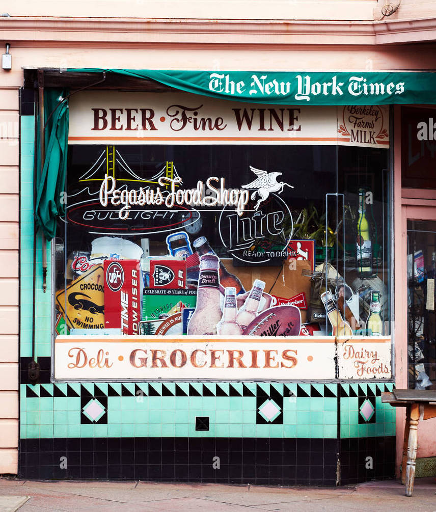
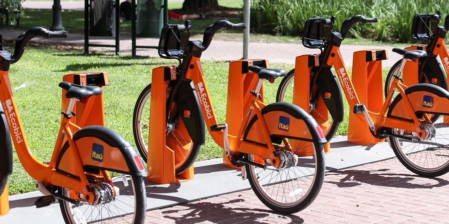

These are my first projects as a Data Scientist, so their main objective is to demonstrate that I was not only able to acquire multiple skills related to Data Science, but that I was also able to put them into practice in real-world projects. In this sense, we have chosen a regression project, a classification project and a last one reduced to Data Analysis. In turn, each one carried out on different platforms and/or languages in order to show the handling of said tools.
Python-Machine Learning-Regression-Fourier-ScikitLearn

Data science project that seeks to predict future sales. For this, data exploration and analysis techniques, visualizations, time series forecasting, preprocessing data and machine learning regression algorithms were implemented.
Python-Machine Learning-Classification-ScikitLearn-XGB
Well-known Kaggle's competition whose goal is to predict who will survive the most famous shipwreck in the world. For this, data exploration, analysis, feature engineering, preprocessing techniques and different classification algorithms such as RandomForestClassifier, KNeighborsClassifier, XtremeGradientBooting and SupportVectorClassifier were applied.
Rstudio-Tidyverse-Lubridate-Plotly-kableExtra

This is the final project of the course that I did on "Introduction to Data Science with R" taught by the UBA, and it is an analysis carried out on the database of the Government of CABA that records each of the income and expenses of eco-bicycles in each of the stations.